--lampe-claireMême instant, jeu en pause : la seule différence entre « aujourd'hui » et « l'essai » est la courbe à la sortie du sol et des murs. Rien d'autre du jeu ne change : ni la lumière, ni sa portée, ni ce que le jeu en lit. Images du cloud (rendu logiciel) : elles valent pour les couleurs et les comptes de pixels, pas pour la cadence. Détail et preuves : RAPPORT.md.
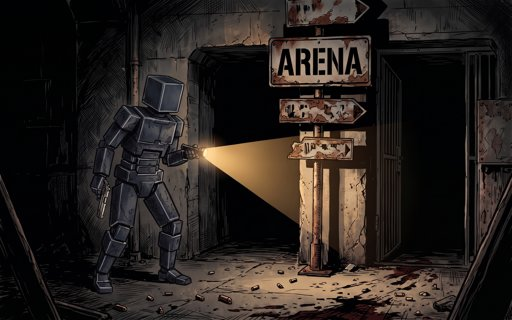
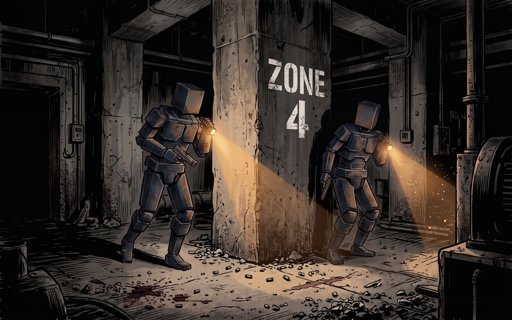
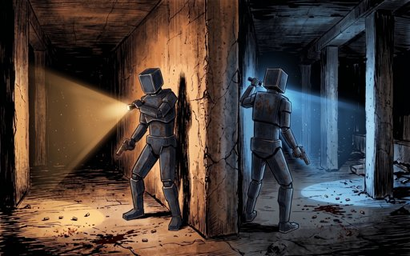
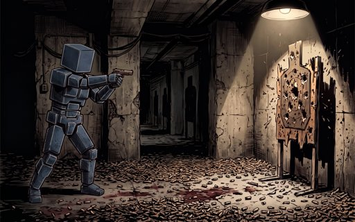
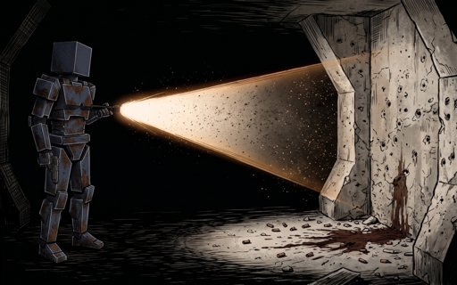
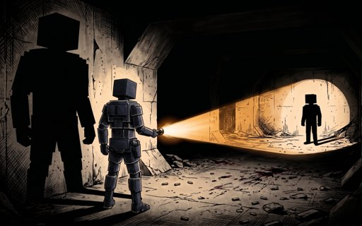
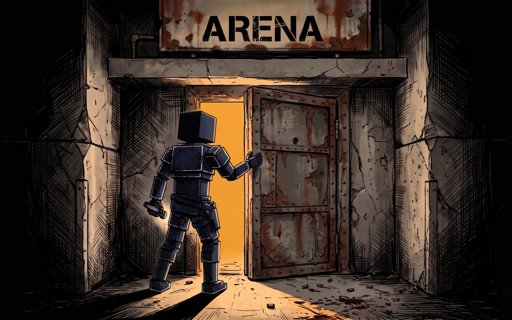
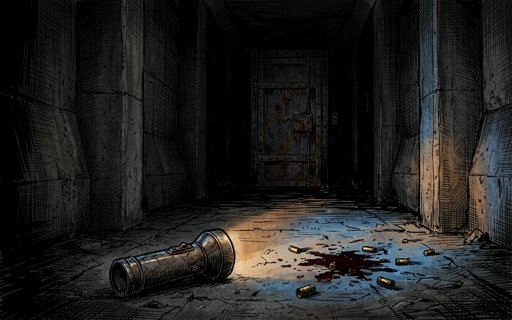
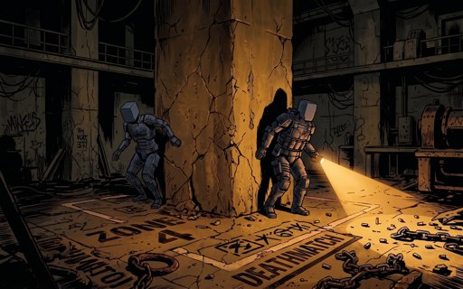
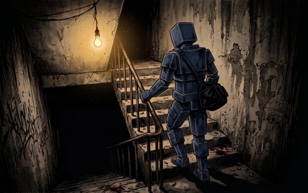
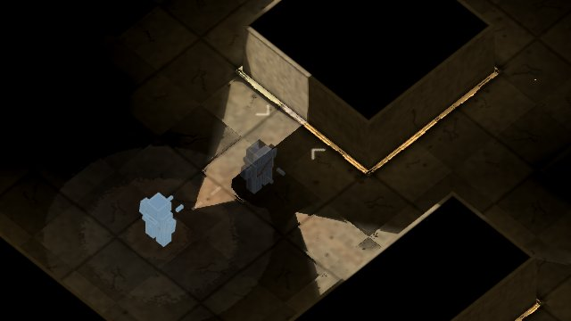
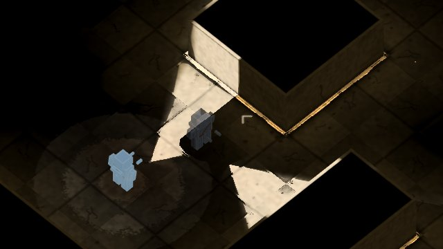
--lampe-claire, 1:1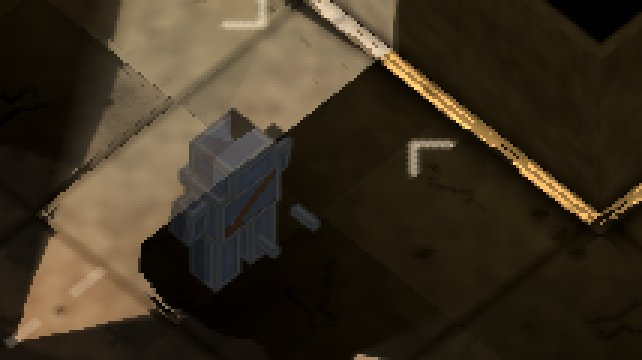
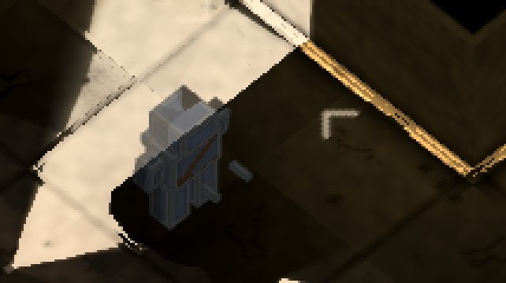
| aujourd'hui | l'essai | |
|---|---|---|
| cœur du cône (≥ 60 aujourd'hui) | méd 128 · p99 190 · 38° · sat. 0.30 | méd 212 · p99 239 · 38° · sat. 0.20 |
| tout ce que la torche éclaire | méd 104 · p99 168 · 38° · sat. 0.32 | méd 144 · p99 230 · 38° · sat. 0.22 |
| pixels changés · noirs allumés · plus sombres · bruit | 39244 · 0 · 0 · 0 | |
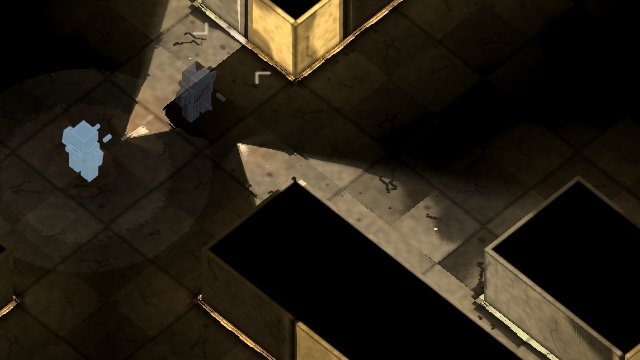
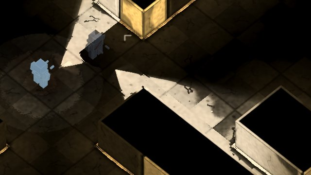
--lampe-claire, 1:1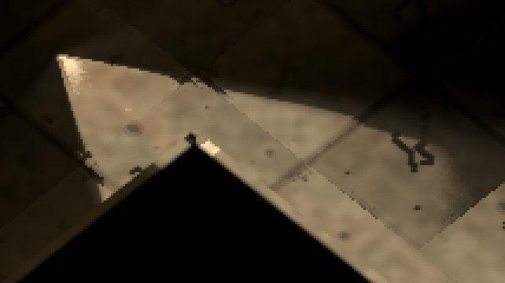
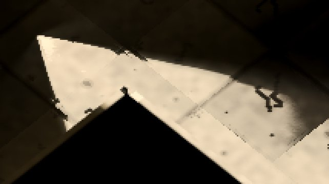
| aujourd'hui | l'essai | |
|---|---|---|
| cœur du cône (≥ 60 aujourd'hui) | méd 122 · p99 219 · 38° · sat. 0.33 | méd 204 · p99 242 · 38° · sat. 0.22 |
| tout ce que la torche éclaire | méd 54 · p99 206 · 38° · sat. 0.36 | méd 76 · p99 241 · 38° · sat. 0.26 |
| pixels changés · noirs allumés · plus sombres · bruit | 71776 · 0 · 0 · 0 | |
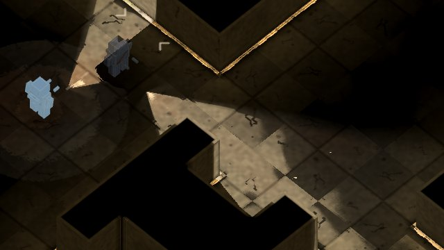
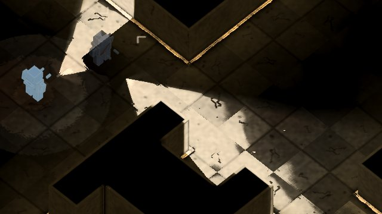
--lampe-claire, 1:1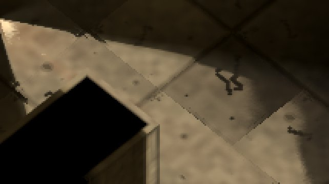
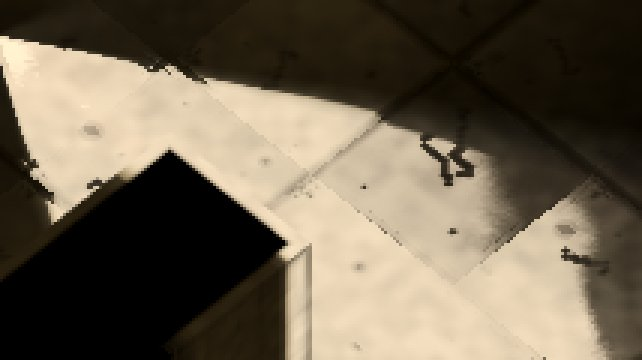
| aujourd'hui | l'essai | |
|---|---|---|
| cœur du cône (≥ 60 aujourd'hui) | méd 124 · p99 205 · 38° · sat. 0.33 | méd 208 · p99 241 · 38° · sat. 0.21 |
| tout ce que la torche éclaire | méd 44 · p99 170 · 38° · sat. 0.36 | méd 52 · p99 224 · 38° · sat. 0.26 |
| pixels changés · noirs allumés · plus sombres · bruit | 77964 · 0 · 0 · 0 | |
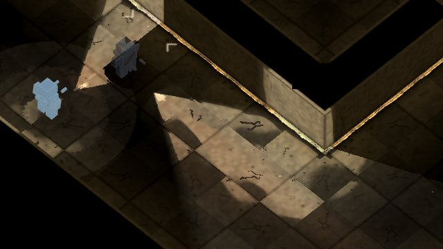
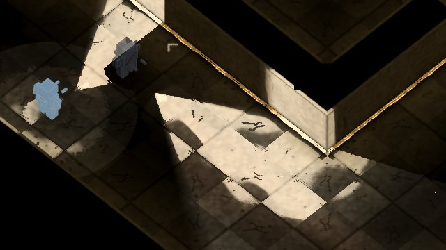
--lampe-claire, 1:1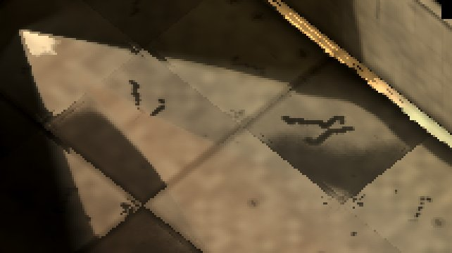
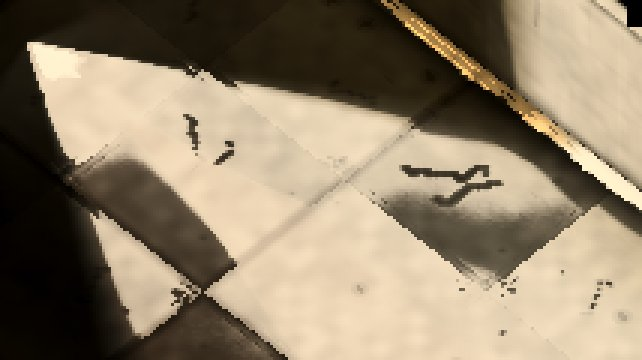
| aujourd'hui | l'essai | |
|---|---|---|
| cœur du cône (≥ 60 aujourd'hui) | méd 123 · p99 205 · 37° · sat. 0.34 | méd 207 · p99 241 · 37° · sat. 0.22 |
| tout ce que la torche éclaire | méd 37 · p99 148 · 37° · sat. 0.39 | méd 43 · p99 223 · 37° · sat. 0.28 |
| pixels changés · noirs allumés · plus sombres · bruit | 114362 · 0 · 0 · 0 | |
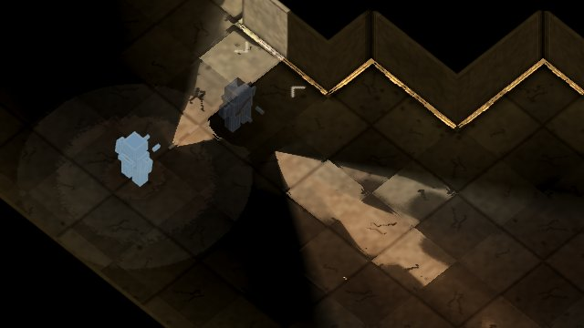
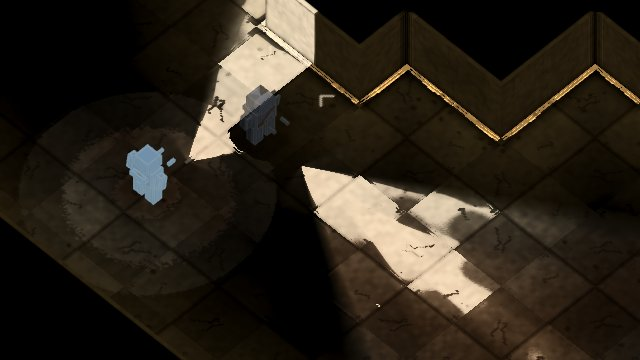
--lampe-claire, 1:1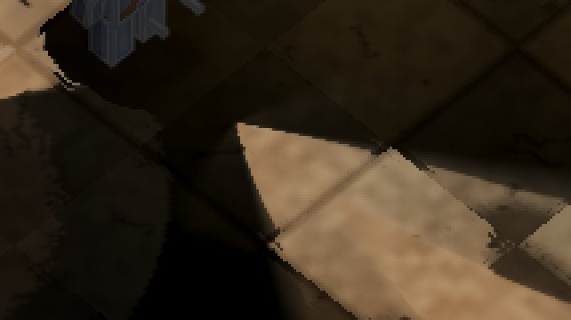
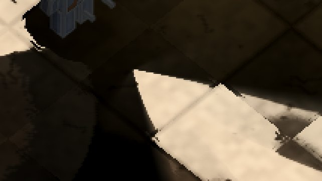
| aujourd'hui | l'essai | |
|---|---|---|
| cœur du cône (≥ 60 aujourd'hui) | méd 122 · p99 194 · 34° · sat. 0.36 | méd 205 · p99 236 · 36° · sat. 0.22 |
| tout ce que la torche éclaire | méd 27 · p99 142 · 34° · sat. 0.45 | méd 28 · p99 221 · 34° · sat. 0.34 |
| pixels changés · noirs allumés · plus sombres · bruit | 105009 · 0 · 0 · 0 | |
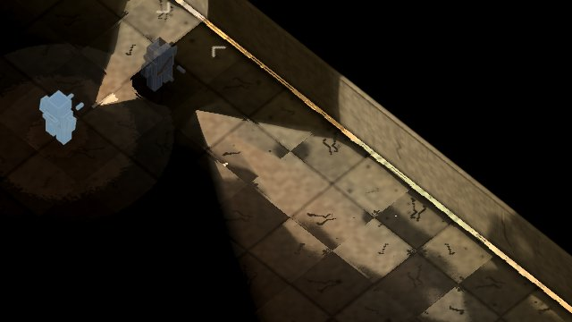
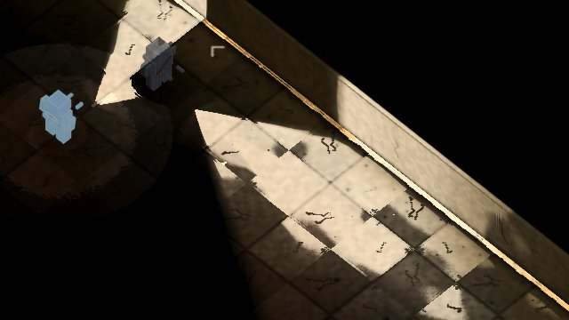
--lampe-claire, 1:1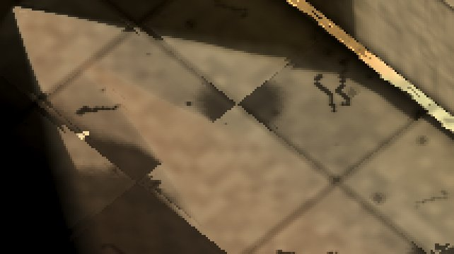
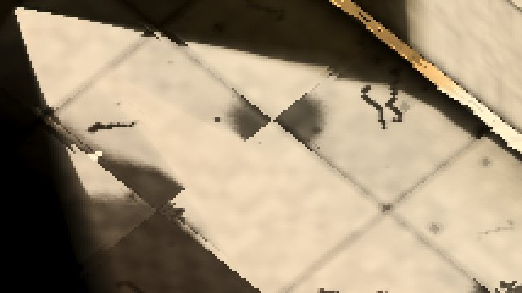
| aujourd'hui | l'essai | |
|---|---|---|
| cœur du cône (≥ 60 aujourd'hui) | méd 121 · p99 216 · 37° · sat. 0.35 | méd 202 · p99 242 · 37° · sat. 0.23 |
| tout ce que la torche éclaire | méd 45 · p99 204 · 36° · sat. 0.39 | méd 55 · p99 228 · 36° · sat. 0.28 |
| pixels changés · noirs allumés · plus sombres · bruit | 93662 · 0 · 0 · 0 | |
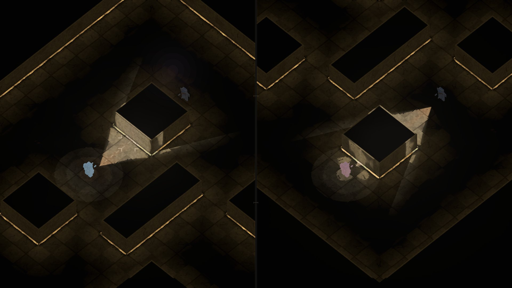
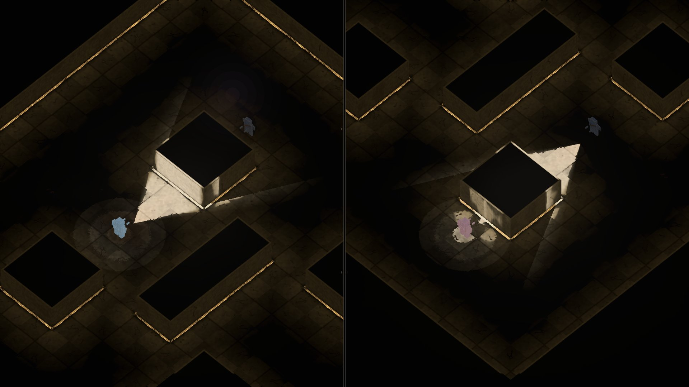
| aujourd'hui | l'essai | |
|---|---|---|
| cœur du cône, vue de J1 | méd 120 · p99 187 · 38° · sat. 0.31 | méd 191 · p99 219 · 38° · sat. 0.21 |
| cœur du cône, vue de J2 | méd 114 · p99 137 · 34° · sat. 0.35 | méd 167 · p99 204 · 34° · sat. 0.25 |
| pixels changés · noirs allumés · plus sombres · bruit | 88757 · 0 · 0 · 0 | |
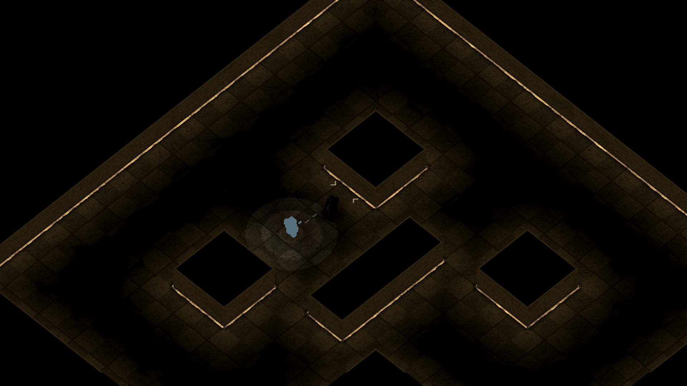
| aujourd'hui | l'essai | |
|---|---|---|
| pixels changés · noirs allumés · plus sombres · bruit | 17083 · 0 · 0 · 0 | |